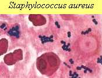

ANTI-BACTERIAL IMMUNITY
Perhaps, this kind of immune resistance is the most illuminated in infectious immunology. In the earliest stage of a bacterial infection, long before the specific immune response is organized, the body protection is established by many preimmune defensive mechanisms, based on non-immunologic recognition of bacterial constituents and on less specific barrier factors. These are, first of all, natural antibiotics produced by normal eubacterial flora, living on healthy skin and mucosa. They prevent the settlement of parasitic germs among the commensals.
Microbial aggression is discouraged also by lysozyme of body excrets, by Marchionini’s water-lipid mantle on the normal skin surface, by gastric juice acid and by rapid pH shifts during gut passage. Urea of urine and sweat is also bactericidal. Some mechanical factors like mucociliary activity in respiratory tracts, desquamation of epidermis, natural lavage of urinary tracts and relative impenetrability of integument – all must be listed as non-specific defensive conditions in bacterial infection. For example, it is well known, (and, by the way, demonstrated by I. Metchnikoff and M. Pettenkoffer in risky self-experiments), that the individuals with higher gastric acidity are more resistant to cholera vibrio.
Pre-immune recognition of certain bacterial components triggers some early-reacting effector mechanisms.
Bacterial lipopolysaccharides (LPS) directly activate the alternative pathway of complement. LPS-sensitive receptor of macrophages and endotheliocytes (CD14), as well as receptors for formyl-methionine containing prokaryotic peptides and complement fragments, capture these ligands of bacterial cells. This causes the activation of phagocytosis and cytokine cascade. Complement activation is accompanied by parallel induction of other peptide cascades in plasma: the activity of kinins, coagulation and fibrinolysis grows up.
The pyrogenic cytokines (IL-1, IL-6, IL-8, TNF, IFNs), as well as direct action of LPS over endothelium of subcomissural organ in the brain cause prostaglandin production. Prostaglandins shift the set point of hypothalamic thermostat. As a result, normal body temperature starts to be accepted as too low one, and hypothalamus through sympathetic nerves and pituitary hormone limits heat losses and increases heat production. Finally, the fever starts, and rise of body temperature causes some anti-bacterial effect against many germs. For example, it is well known, that susceptibility of Mycobacterium tuberculosis to streptomycin increases significantly with 2 to 30 C gain of temperature.
Under the influence of cytokines named above, hepatocytes and macrophages all around the organism produce the acute phase proteins (C-reactive protein, lactoferrin and many other a - and b - globulins), which render germicidal and antioxydative effects, limiting the free-radical tissue alteration in infectious foci and decreasing the availability of growth factors for bacteria. In the mechanism of bacteristatic effect pivotal importance belong to hypoferremia and hypozincemia, typical for acute phase of preimmune response. Iron and zinc are essential for bacterial growth (V. Prelog), and immune system is able to limit the production of transferrin and other carriers of these metals during fever in order to decrease the risk and speed of septic process. It has been shown in model experiments with lizards, that in the absence of hypoferremia the protective effect of high body temperature is dramatically declined, if not vanished at all (A. Szent-Ivanyi, I. Szent-Ivanyi, 1986). The expenditure of this defensive mechanism is the difficulty produced by hypoferremia for hematopoesis. Iron-deficient anemia is almost obligatory complication of any prolonged or repeated infection. Trying to correct the nature and supply feverish patient with additional iron, a doctor may spoil the protective effect of fever. This situation brightly illustrates, that the nature gives nothing gratis, but just sells, in accordance with the principle, proclaimed in verses by famous American poet Ralf W. Emerson.
Among the acute phase proteins, there are mannan binding ones. They affix the bacterial lipoarabinomannans, amplifying the phagocytosis and cytokine output. All these mechanisms interplay in course of infectious inflammation.

The next line of defense is presented by accelerated T-independent immune responses for O-antigen of LPS, for mannans and for some cytoskeletal antigens of Flagellata. Although not very strong and delimited with IgM production, they still are able to slow down the spread of germs and activate phagocytosis.
Finally, the effectors of specific immune response – Ig and lymphocytes, attack bacteria.
It seems obvious and even sounds banal, that circulating antibodies protect organism from bacteria. But, as a rule, the immunoglobulins per se are devoid of enzymatic activity, although there are some exclusion. Hence, it is very interesting how precisely they can hit germs, if not by catalytic way? There are several mechanisms of Ig direct antibacterial action:
- binding and neutralization of bacterial toxins (e.g. in tetanus)
- inactivation of virulence factors and expansion mechanisms (e.g. coccal hyaluronidases or streptolysin O)
- block of bacterial growth factors’ receptors (e.g. iron-capturing proteins)
- Demolish of bacterial phagocyte repellents.
- Recently it has been shown that some antibodies display enzymatic activity and may act directly as hydrolases and even DNAses (A.M. Shuster et al. 1987).
Antibodies toward bacteria also target on them the activity of many effector mechanisms, causing indirect antibacterial action:
- Opsonization of germs for phagocytosis
- Complement-mediated lysis
- Block of bacterial organoids responsible for cell motility
- Prevention of bacterial attachment to target cells by means of adhesive sites occupation.
Parallel to Ig-response (and in case of prolonged intracellular survival of a germ – even predominantly), bacterial infection triggers cellular cytotoxic effector immune mechanisms. The cytotoxicity can be aimed on infected host cells and directly on bacteria. It includes:
- CD8+ lymphocyte killing
- Direct contact with NK-cells
- Cytotoxicity of mucosal g d -T lymphocytes
- Cytotoxic and bacteriostatic action of cytokine-activated non-professional phagocytes (e.g. fibroblasts) over bacteria, staying within them.
All the mechanisms of antibacterial immunity are imperfect and may be the source of secondary self-harm. The excessive response for LPS and other bacterial components can provoke endotoxin shock (also known as septic, toxic or infective shock). G. Sanarelli (1924) originally observed this phenomenon under experimental conditions. Sanarelli has induced toxic shock in rabbits by repeated i/v injection of dead cholera vibrios. He has noticed, that the phenomenon can be equally precipitated by resolving dose of any other Gram-negative germs, which sharply delineated it from systemic anaphylaxis, described by Ch. Richet and P. Portier. H.J. Schwartzmann (1928) reproduced local analogue of systemic Sanarelli’s phenomenon by repeated injection of endotoxin (i/d and i/v with 24 h interval). At the site of primary injection of LPS-containing bacteria, the cytokine receptors are expressed, and thus some peculiar state of increased cytokine susceptibility is established. For some time this process does not cause any symptoms. But in course of bacteriemia massive release of cytokines occurs. The endothelial and macrophagal cells at the site of primary exposure get activated. This is resulted in cell adhesion molecules expression, thrombosis, coagulation and necrosis. The external manifestation of local Sanarelli’s (Schwartzman’s) phenomenon looks like hemorragic necrotic rush. Clinical correlate of Sanarelli-Schwartzman phenomenon in bacterial infection is stellate ascending skin rush in meningococcemia. Practically, systemic spread of this phenomenon may result in fatal disseminated intravascular coagulation.
Many bacterial antigens, essential for germ survival and serving as main targets of immune response, are ubiquitous evolutionary ancient proteins with highly conservative structure. As human cells inherit them (or their close homologues) also, antibacterial response against these proteins has pretty high chances to give rise to autoimmune attack. The typical example is related to heat shock proteins (HSP). HSP are very important anti-necrotic agents, which protect cellular proteins from denaturation under stressful conditions (so called chaperon or chaperoning function). Some of them have 40% to 60% homology in germs and human cells. The epitopes of HSP are immunodominant in many anti-bacterial immune responses, causing cross-reaction towards self-HSP. Due to this, for example, Mycobacteria may indirectly cause the autoimmune arthritis and some Diphtheroids can facilitate autoimmune demyelinizing CNS disorders. The autoimmune complications occur after bacterial infections, if there are some defects in MHC-dependent antigen recognition system. So, the risk is dramatically increased for the carriers of certain MHC alleles. Yersenia enterocolitica can induce in some individuals autoimmune Graves’ disease, sharing epitopes with human TSH.
NEXT CHAPTER OR